Development
Membangun dan mengembangkan antarmuka serta aplikasi berbasis web.
PORTFOLIO · 2026
lulusan Sarjana Terapan Manajemen Informatika yang tertarik pada Web Development, UI/UX Design, dan System Analyst.
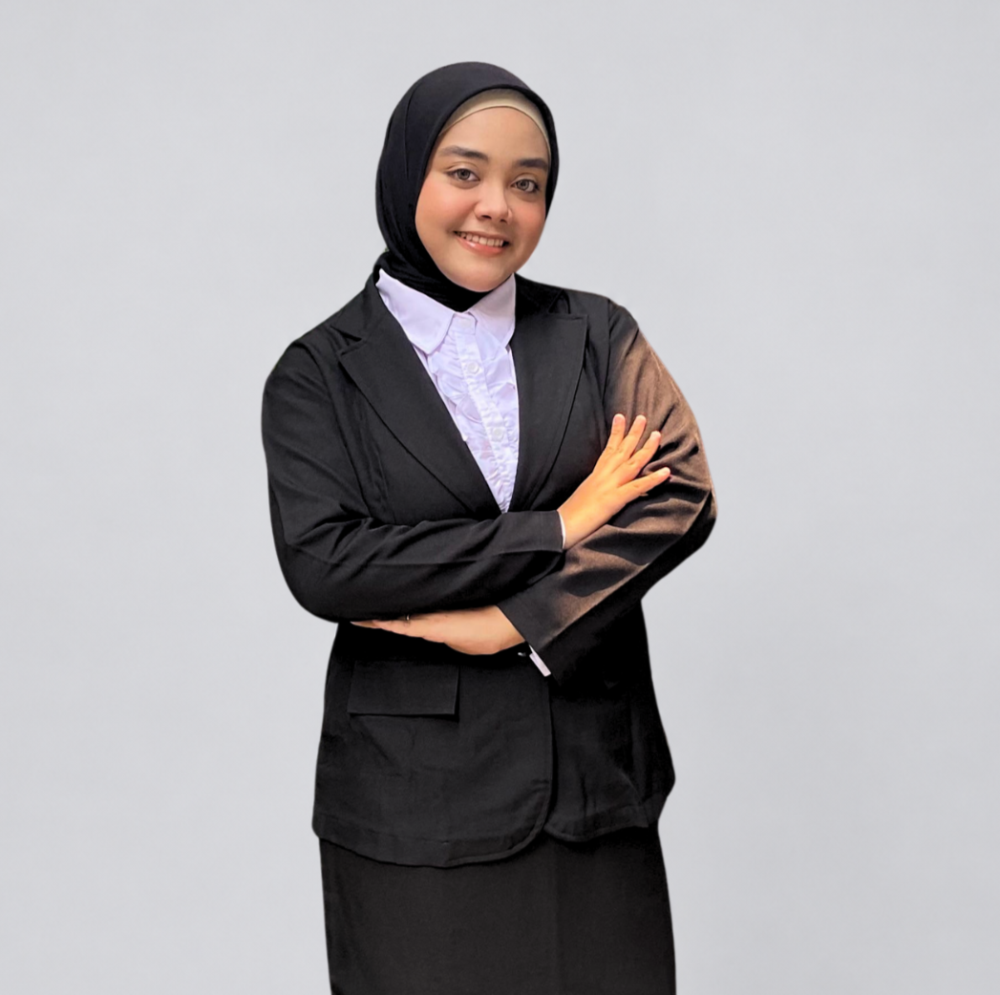
Curious mind.
Thoughtful solutions.
Saya lulusan Sarjana Terapan Manajemen Informatika yang senang mengubah kebutuhan pengguna menjadi solusi digital yang fungsional, terstruktur, dan mudah digunakan.
Melalui proyek akademik, studi independen, dan pengalaman magang, saya mengembangkan keterampilan dalam pengembangan website, perancangan UI/UX, pengelolaan data, serta analisis sistem. Saya senang belajar hal baru, bekerja secara teliti, dan berkolaborasi untuk menghasilkan solusi yang bermanfaat.
Perpaduan kemampuan teknis, desain, dan kolaborasi untuk mendukung proses pengembangan solusi digital.
Membangun dan mengembangkan antarmuka serta aplikasi berbasis web.
Merancang pengalaman pengguna dan memetakan kebutuhan sistem.
Mendukung proses kerja yang terorganisasi dan komunikasi yang efektif.
Beberapa karya yang merepresentasikan proses saya dalam merancang, menganalisis, dan membangun.
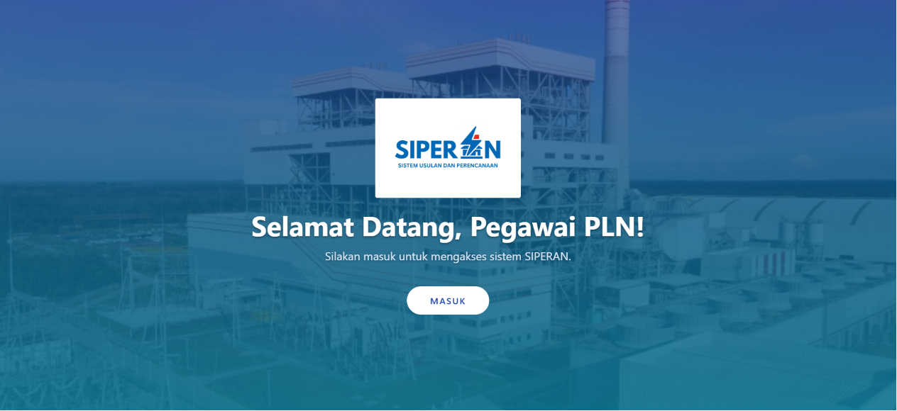
Sistem pendukung keputusan berbasis website untuk membantu pengelolaan usulan dan merekomendasikan prioritas tahun pelaksanaan menggunakan metode Simple Additive Weighting dengan lima kriteria penilaian.
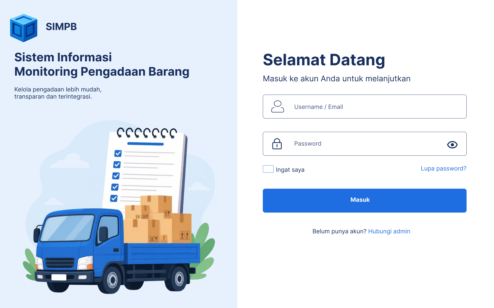
01 Monitoring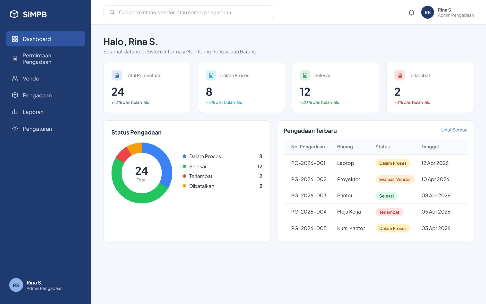
02 Pengajuan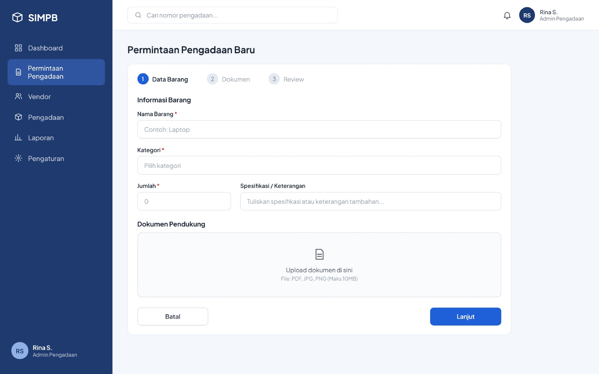
03 Dokumen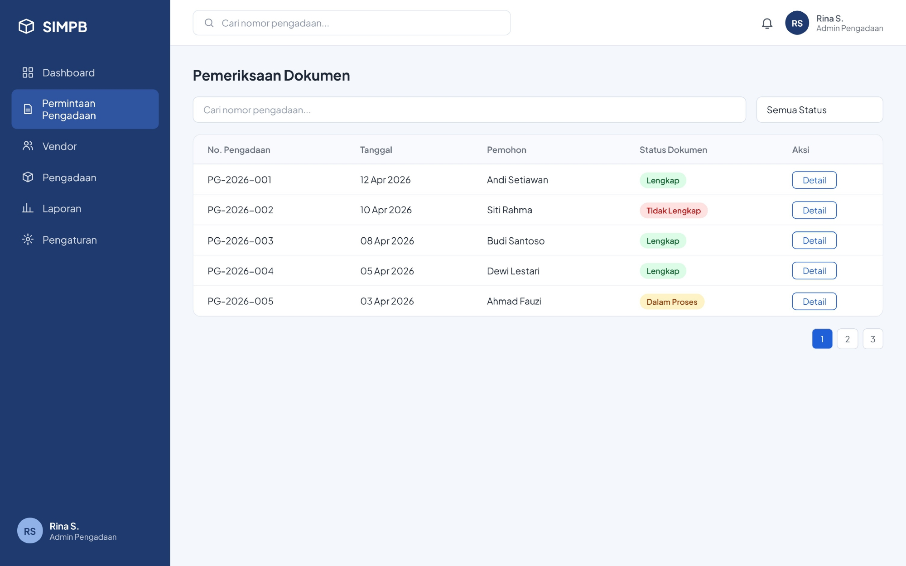
04 Evaluasi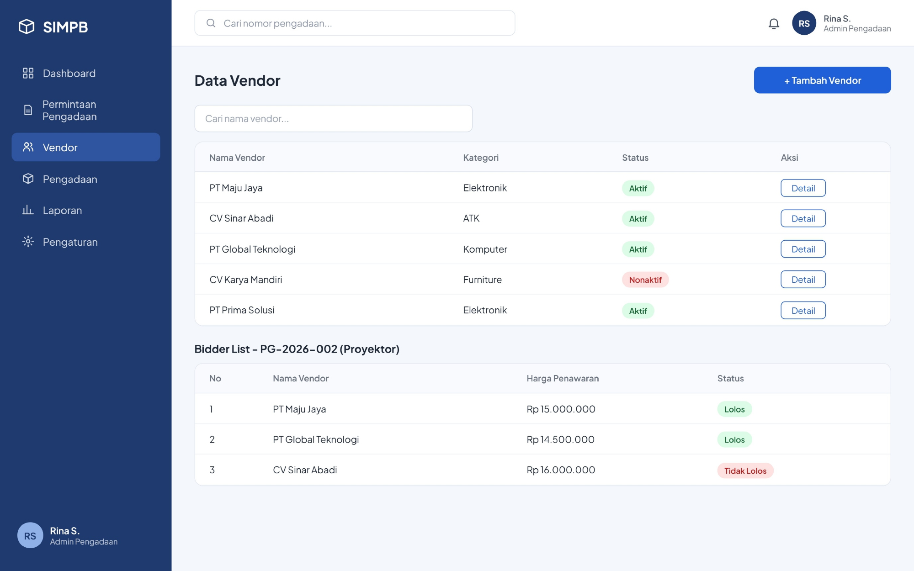
05 Vendor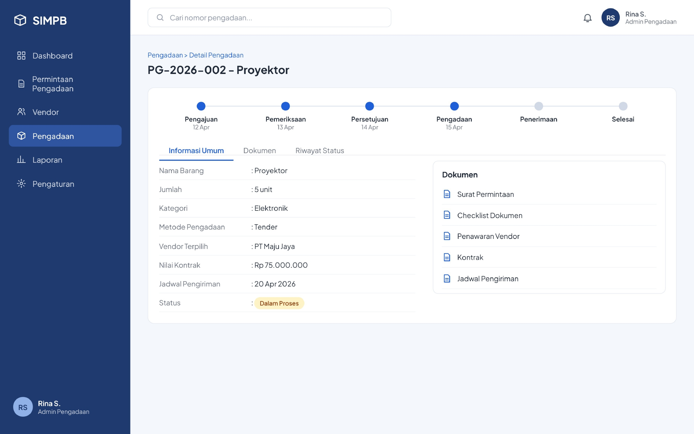
06 KontrakStudi kasus konseptual yang mengangkat masalah dokumen permintaan yang tersebar, status pengadaan yang sulit dipantau, serta laporan kinerja yang masih disusun manual. Solusi yang dirancang mencakup checklist kelengkapan dokumen, pemantauan tahapan pengadaan, peringatan keterlambatan, dan laporan kinerja vendor.
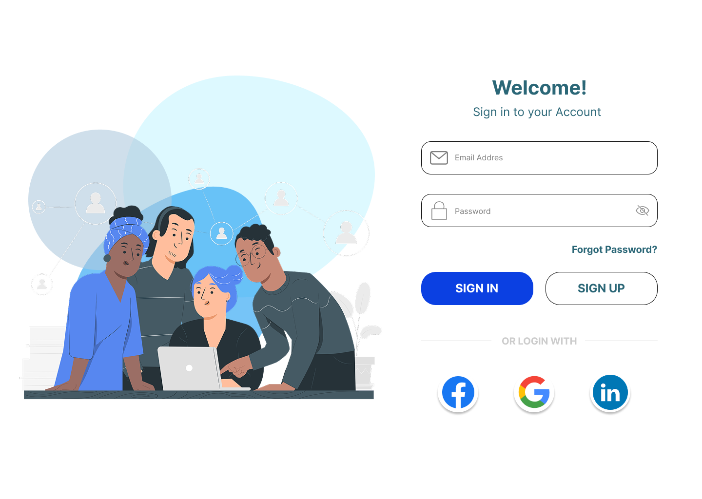
Skill Proof Market (SPM) merupakan proyek akhir tim MSIB 2025 bersama PT Vinix Seven Aurum berupa marketplace digital yang menghubungkan talenta digital dengan UMKM melalui sebuah platform berbasis web. Berkontribusi dalam riset pengguna, penyusunan user flow, wireframe, serta perancangan prototype antarmuka menggunakan Figma.
Eksplorasi poster konseptual untuk berbagai varian rasa dengan fokus pada komposisi, warna, tipografi, dan konsistensi visual kampanye.
Konten edukasi kelembagaan, informasi pemeriksaan, dan publikasi seremonial BPK Perwakilan Sumatera Selatan.
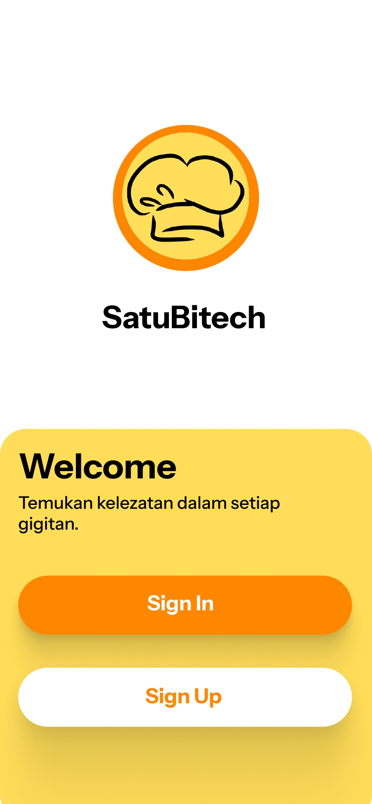
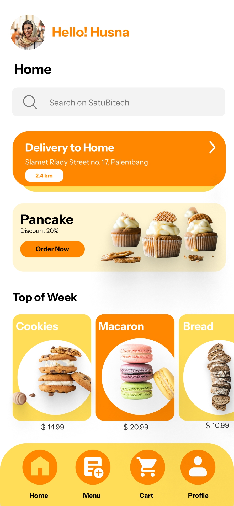
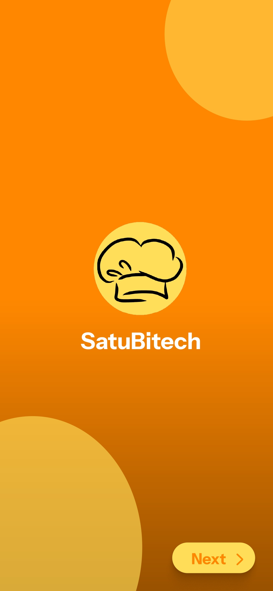
Perancangan alur sign up dan login, beranda, serta profil dengan fokus pada kemudahan navigasi dan konsistensi tampilan antarlayar.
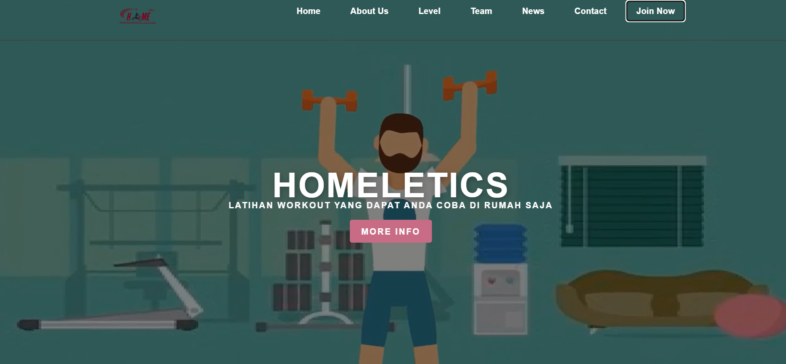
Website kebugaran dengan video latihan, rencana latihan bertingkat, dan profil pelatih yang dirancang agar responsif di berbagai perangkat.
Pengalaman akademik dan profesional yang membentuk cara saya bekerja dan terus berkembang.
Menyelesaikan program dengan predikat sangat baik, mengerjakan proyek website Bank Sampah, dan berkolaborasi dalam final project Skill Proof Market.
Lihat Sertifikat ↗Membuat sekitar lima desain grafis per hari, menyusun buku memori 80 halaman, mengolah lebih dari 30 kliping berita bulanan, dan merancang konsep sistem pengarsipan digital.
Lihat Sertifikat ↗Berfokus pada pengembangan web, basis data, analisis sistem, dan proyek akhir sistem pendukung keputusan pada PT PLN UP3 Ogan Ilir.
Menyelesaikan pendidikan menengah dengan nilai akhir 88,21/100.
Pelatihan dan kredensial yang mendukung pengembangan keterampilan teknis, desain, dan komunikasi.
MSIB Batch 3 · PT Vinix Seven Aurum · Desember 2025
Lihat kredensial ↗Saya terbuka untuk peluang di bidang Web Development, UI/UX Design, dan System Analysis.